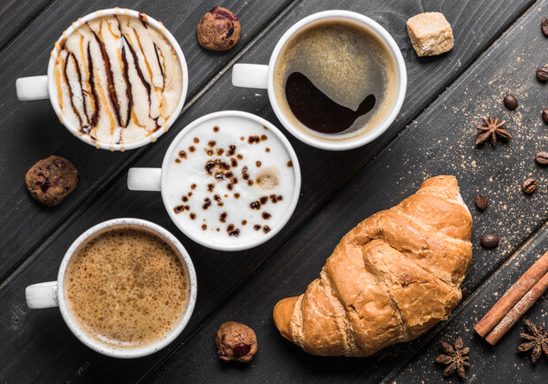

Досконалий смак
Якщо поглянути глибше,ЯрКава — це історія не просто про каву. Кожна наша кав’ярня – це місце зустрічі друзів, душевного спілкування, щирих посмішок та важливих рішень.
Смачна кава — це привід зустрітися, драйвер нових ідей, спусковий механізм, який заряджає енергією діяти та підкорювати нові вершини. Втілюй мрії в життя з улюбленою кавою в чорно-бірюзовому стаканчику!
Кава — це двигун, який заряджає ритм твого життя та дарує незабутній смак та ніжний аромат. Додай газу та мчи на зустріч новим пригодам у цей вечір.
Заходь на каву в ЯрКава та відчуй насолоду від свіжообжареної кави, яка ретельно відбирається, щоби наповнити смаком кожен ковток..